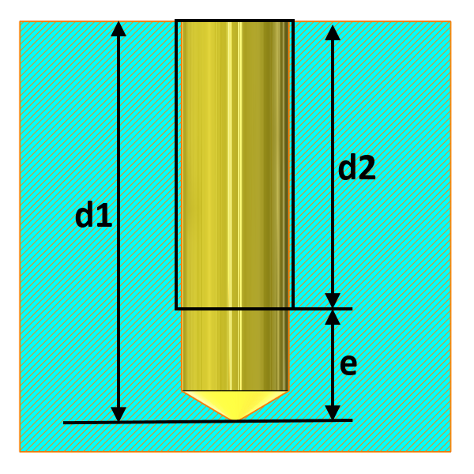

ねじ付き穴のねじ逃げは、ユーザーが指定した値に従って設定される必要があります。
穴のねじ逃げは、タップの面取り刃（チャンファ歯）が入るための十分なクリアランスを確保し、タップが穴の底で突き当たるのを防ぎ、さらに主軸のオーバートラベルにも対応できるようにする必要があります。
また、穴の底部に溜まる可能性のある切りくずを排出するための十分な空間を確保する役割もあります。
ねじ付き穴に対して、ねじ逃げはねじピッチの3～5倍とすることが推奨されます。
このルールは、ねじ逃げを絶対値または範囲として、あるいはねじピッチの倍数として指定できるように構成できます。

ここで、
d1 = 穴深さ
d2 = ねじ深さ
e = (d1-d2) ねじ逃げ
注記:
このルールは、パターン、ミラーなどによって作成された「穴」フィーチャ（ねじ付き）のコピーには適用されません。
このルールは、アセンブリレベルの解析にも対応しています。
このルールは、DFMPro 設定に基づき、トップレベルアセンブリ部品に対して実行できます。